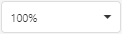
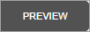

Main Toolbar
The Main Toolbar provides access to the report editing commands in the Web Report Designer.
| Command | Icon | Description |
|---|---|---|
| Cut | Cuts the selected control to the clipboard. | |
| Copy | Copies the selected control to the clipboard. | |
| Paste | Pastes a control from the clipboard onto the selected report band. | |
| Delete | Deletes the selected control. | |
| Undo | Cancels the last change made to the document. | |
| Redo | Reverses the last undo action. | |
| Zoom Out | Decreases the document's current zoom factor by 5 percent. | |
| Zoom Factor |  | Zooms to a specific zoom factor selected from the dropdown list. |
| Zoom In |  |
Increases the document's current zoom factor by 5 percent. |
| Validate Bindings | Highlights report controls with invalid data bindings or incorrect expressions. | |
| Full Screen | Toggles between the Report Designer's full screen and default size. | |
| Preview |  | Switches to Preview Mode. |
| Design |  |
Switches to Design Mode. |